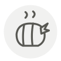

Poularde ◆
Poularde
| Latin name | Gallus gallus domesticus |
|---|---|
| Family | Meat & poultry |
| Origin | Bresse and Le Mans, France |
| Season (France) | November – January |
| Flavour | Rich · Buttery · Delicate · Mild |
| Typical price (France) | 18–35 €/kg |
What it is
A poularde is a pullet stopped from laying and fattened for her last weeks in an épinette, a narrow darkened crate that keeps her still. She is the female counterpart of the castrated capon, and those weeks of stillness are what lace the flesh with fat instead of packing it under the skin.
In the kitchen
Poach her whole in a light stock at a bare tremble, 80 °C, for an hour and a quarter, then reduce the broth with cream — roasting wastes what the fattening was for. Slide truffle or tarragon under the skin first; the fat carries it into the meat.
Goes with
Cream Black truffle Tarragon Leek Morel Butter Vin jaune Carrot
Same species
Egg white powder (albumin) Chicken tail (bonjiri) Bresse chicken Capon Chicken Rooster
Also used with
In season alongside
Goose foie gras Boudin blanc Largehead hairtail (tachiuo) Tuna belly (toro) Pauillac lamb Japanese tilefish (amadai)
Something wrong here, or missing? Tell us